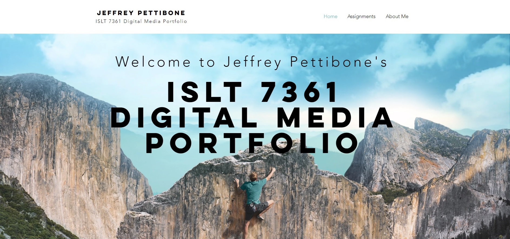

I am new to collecting my work for it to be displayed or used as evidence...Therefore, I only have a few examples of my creations. However, I have been mixing live sound, editing photographs, and performing other related items for upwards of 10 years now. Click on the items below to be taken to external websites, seperate from this site, to see examples of my work.
This website displays numerous projects that involved Adobe Photoshop, Adobe Premiere, and Adobe Audition. Each project required myself to create an item entirely based on the unit I was wanting to teach and the content I wished to convey to my students. The project shown is largely based around the basics of economics for a third-grade audience. You are welcome to click the image to be taken to an external Wix site, seperate from this website.
This Dropbox drive gives a more in-depth look at the projects that involved Adobe Photoshop, Adobe Premiere, and Adobe Audition. With these files, you can see the work that each project required. This allows you to download the files I worked on and view them for yourself. Each project required myself to create an item entirely based on the unit I was wanting to teach and the content I wished to convey to my students. The project shown is largely based around the basics of economics for a third-grade audience. You are welcome to click the image to be taken to the external site, Dropbox, seperate from this website.
In this brief video introduction, I explain the basics of natural, capital, and human resources. I provide many examples of each category using video shots of each type of resource.
In this audio piece, you are given a short tutorial of the difference between goods and services, as well as needs and wants. Two different children speak examples of goods and services. Then, I take over to explain the difference between needs and wants.